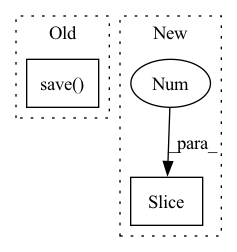

Pattern ID :32557

Before Change
// _ = plt.hist(out_img[:, :, 0], bins="auto") // arguments are passed to np.histogram
// plt.title("Histogram with "auto" bins")
// plt.show()
np.save(os.path.join(dump_path, "out.npy"), out_img)
out_img = Image.fromarray(np.uint8(get_uint8_range(out_img)))
out_img.save(os.path.join(dump_path, str(img_id).zfill(img_format[0]) + img_format[1]))
if should_display:
After Change
dump_img = np.copy(out_img)
dump_img += np.array(IMAGENET_MEAN_255).reshape((1, 1, 3))
dump_img = np.clip(dump_img, 0, 255).astype("uint8")
cv.imwrite(os.path.join(dump_path, out_img_name), dump_img[:, :, ::-1])
if should_display:
plt.imshow(np.uint8(get_uint8_range(out_img)))
plt.show()
In pattern: SUPERPATTERN
Frequency: 4
Non-data size: 2
Instances
Fragment ID: 94767494
Project Name: gordicaleksa/pytorch-neural-style-transfer
Commit Name: 6856e5796971c3fb5e77c0a798b35e6e106b5bcb
Time: 2020-03-30
Author: gordicaleksa@gmail.com
File Name: utils/utils.py
M Class Name: AnonimousClass
N Class Name: AnonimousClass
M Method Name: save_and_maybe_display(6)
N Method Name: save_and_maybe_display(7)
M Parent Class:
N Parent Class:
M File Name: utils/utils.py
N File Name: utils/utils.py
M Start Line: 61
M End Line: 75
N Start Line: 74
N End Line: 86
'>
Before Change
accs = model_max.finetunning(x_spt, y_spt, x_qry, y_qry, c_spt, c_qry, n_spt, n_qry, g_spt, g_qry, feat)
accs_all_test.append(accs)
torch.save(model_max.state_dict(), "./model.pt")
accs = np.array(accs_all_test).mean(axis=0).astype(np.float16)
print("Early Stopped Test acc:", accs[-1])
print("Total Time:", time.time() - s_start)
After Change
accs = maml(x_spt, y_spt, x_qry, y_qry, c_spt, c_qry, n_spt, n_qry, g_spt, g_qry, feat)
max_memory = max(max_memory, float(psutil.virtual_memory().used/(1024**3)))
if step % args.train_result_report_steps == 0:
print("Epoch:", epoch + 1, " Step:", step, " training acc:", str(accs[-1])[:5], " time elapsed:", str(time.time() - s)[:5], " data loading takes:", str(data_loading_time)[:5], " Memory usage:", str(float(psutil.virtual_memory().used/(1024**3)))[:5])
s_r = time.time()
// validation per epoch
'>
Fragment ID: 94767495
Project Name: mims-harvard/g-meta
Commit Name: edbc5799976b391ada110fedab31bca222247449
Time: 2020-10-18
Author: kh2383@nyu.edu
File Name: G-Meta/train.py
M Class Name: AnonimousClass
N Class Name: AnonimousClass
M Method Name: main(0)
N Method Name: main(0)
M Parent Class:
N Parent Class:
M File Name: G-Meta/train.py
N File Name: G-Meta/train.py
M Start Line: 87
M End Line: 149
N Start Line: 92
N End Line: 148
'>
Before Change
img = Image.fromarray(img)
if img.mode != "RGB":
img = img.convert("RGB")
img.save(img_path)
def save_and_maybe_display(optimizing_img, dump_path, img_format, img_id, num_of_iterations, saving_freq=-1, should_display=False):
out_img = optimizing_img.squeeze(axis=0).to("cpu").numpy()
After Change
def save_image(img, img_path):
if len(img.shape) == 2:
img = np.stack((img,) * 3, axis=-1)
cv.imwrite(img_path, img[:, :, ::-1])
def generate_out_img_name(config):
'>
Fragment ID: 94767492
Project Name: gordicaleksa/pytorch-neural-style-transfer
Commit Name: 6856e5796971c3fb5e77c0a798b35e6e106b5bcb
Time: 2020-03-30
Author: gordicaleksa@gmail.com
File Name: utils/utils.py
M Class Name: AnonimousClass
N Class Name: AnonimousClass
M Method Name: save_image(2)
N Method Name: save_image(2)
M Parent Class:
N Parent Class:
M File Name: utils/utils.py
N File Name: utils/utils.py
M Start Line: 55
M End Line: 58
N Start Line: 62
N End Line: 64
'>
Before Change
index += 1
crop_image = image.crop([pos_x, pos_y, pos_x + args.image_size, pos_y + args.image_size])
// Save all images
crop_image.save(f"{args.output_dir}/{image_file_name.split(".")[-2]}_{index:04d}.{image_file_name.split(".")[-1]}")
if __name__ == "__main__":
parser = argparse.ArgumentParser(description="Prepare database scripts.")
After Change
def worker(image_file_name, args) -> None:
image = cv2.imread(f"{args.images_dir}/{image_file_name}", cv2.IMREAD_UNCHANGED)
image_height, image_width = image.shape[0:2]
index = 1
if image_height >= args.image_size and image_width >= args.image_size:
'>
Fragment ID: 94767488
Project Name: lornatang/vdsr-pytorch
Commit Name: 5862cd734e4357dccdbf8672d15e5336af7f0bec
Time: 2022-02-21
Author: liuchangyu1111@gmail.com
File Name: scripts/prepare_dataset.py
M Class Name: AnonimousClass
N Class Name: AnonimousClass
M Method Name: worker(2)
N Method Name: worker(2)
M Parent Class:
N Parent Class:
M File Name: scripts/prepare_dataset.py
N File Name: scripts/prepare_dataset.py
M Start Line: 42
M End Line: 51
N Start Line: 48
N End Line: 66